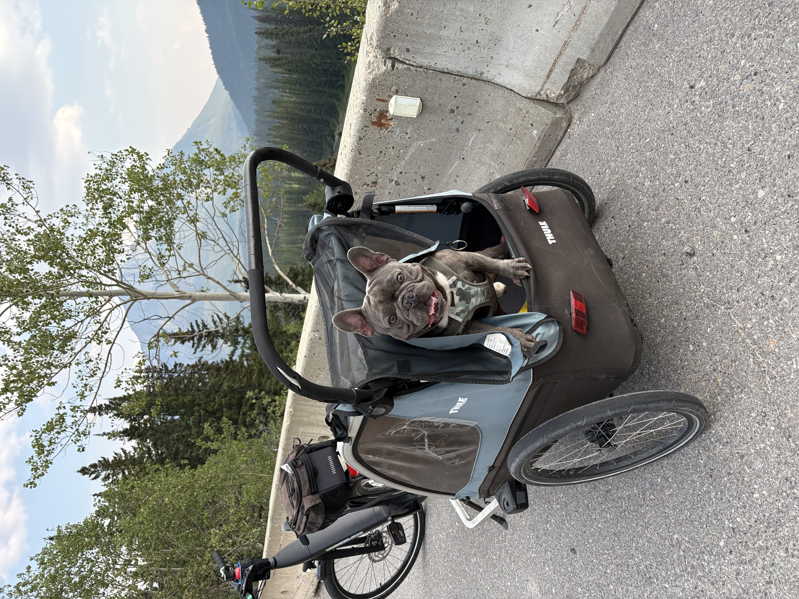
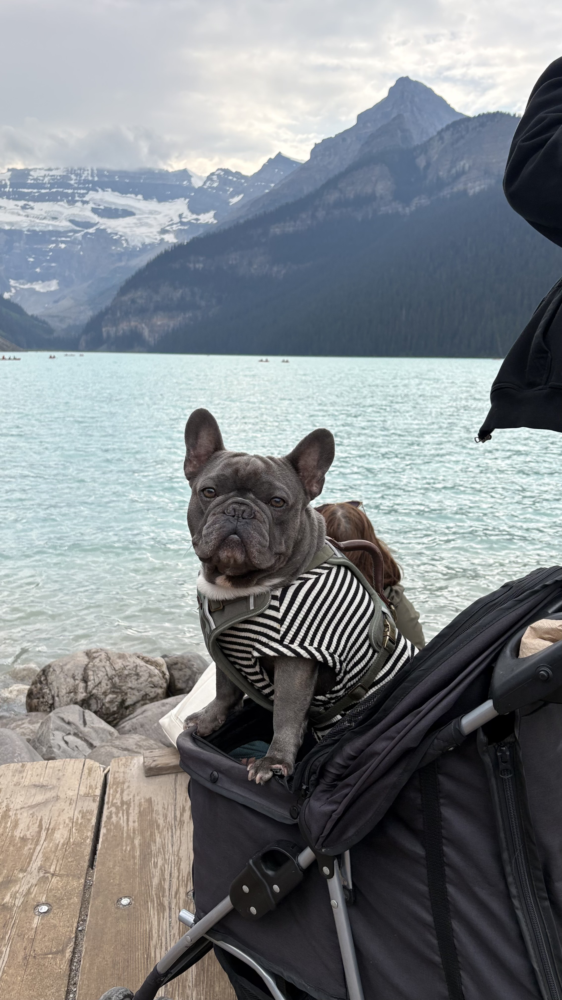
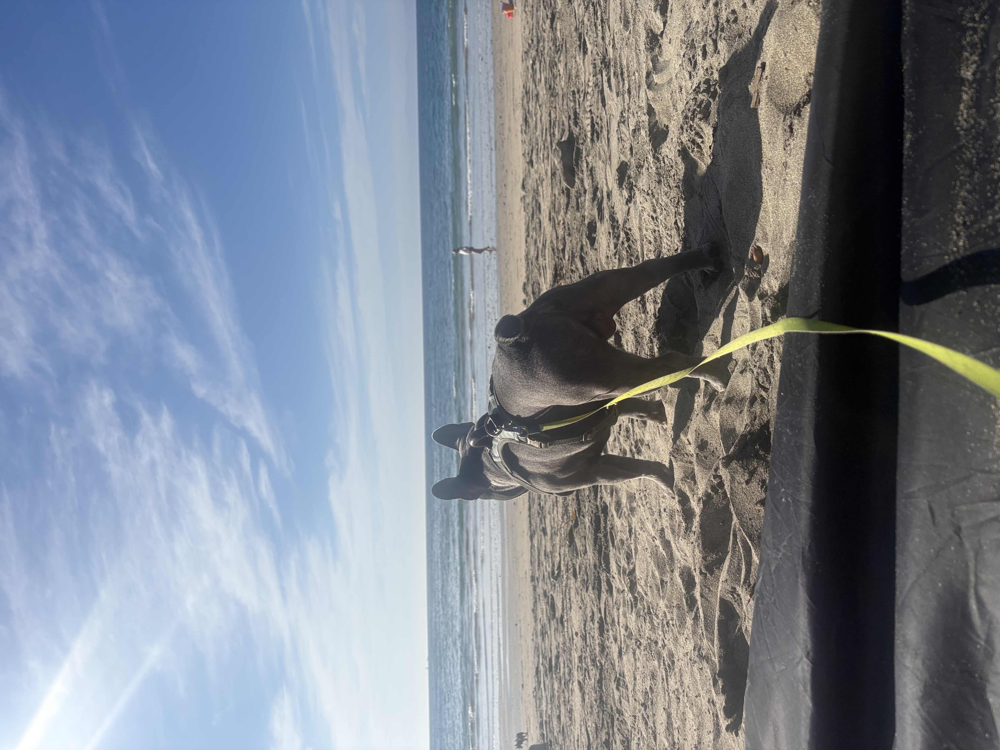

Gucci's Adventures
Meet Gucci, my French Bulldog and favorite travel buddy! From long bike rides through Canada to relaxing beach days in California, Gucci somehow finds a way to make every adventure more entertaining. Here are some of his favorite adventures with us.
50 Miles Through Banff

Location: Banff, Alberta
We rented this little dog chariot near the plaza in Banff, and it was surprisingly affordable! We also rented electric bikes and started riding around with Gucci behind us. Once we got going, we completely lost track of time and didn't realize that we had biked around 50 miles.
Along the way, we saw so much wildlife and scenery that the long ride ended up being completely worth it. I'm especially glad we found a way to bring Gucci along instead of leaving him behind. The funniest part was Gucci barking at my boyfriend from his chariot as if he was telling him to go faster. Apparently, being pulled around Banff wasn't fast enough for him!
Gucci's Rating: 🐾🐾🐾🐾🐾
Mr. Man Made It to Lake Louise

Location: Lake Louise, Alberta
Mr. Man finally made it to Lake Louise! We brought his stroller along because even though Gucci is a young and distinguished gentleman, he is still a Frenchie with very small legs. He likes to play the part of an adventurous dog, but those little legs can only take him so far.
Of course, Gucci somehow became part of the attraction too. He got attention from people from the tour bus all the way to the lake and loved every second of it. What a handsome gentleman!
Gucci's Rating: 🐾🐾🐾🐾🐾
Our Peaceful Beach Escape

Location: RAT Beach, Torrance, California
One of my favorite local adventures with Gucci is driving from the San Fernando Valley to RAT Beach in Torrance. I like coming here because it is dog-friendly, has free parking, and usually feels much less crowded than other beaches I've visited.
I used to bring Gucci to Santa Monica more often, but parking could easily cost around $20. Even though Torrance is a farther drive for us, I'd rather use that money for food and enjoy a quieter and more peaceful beach day.
The calmer environment is also great for Gucci because he gets very excited whenever he sees another dog and can quickly wear himself out. Having more space and fewer crowds gives him a chance to enjoy the beach without getting overwhelmed by everything happening around him.
Gucci's Rating: 🐾🐾🐾🐾🐾